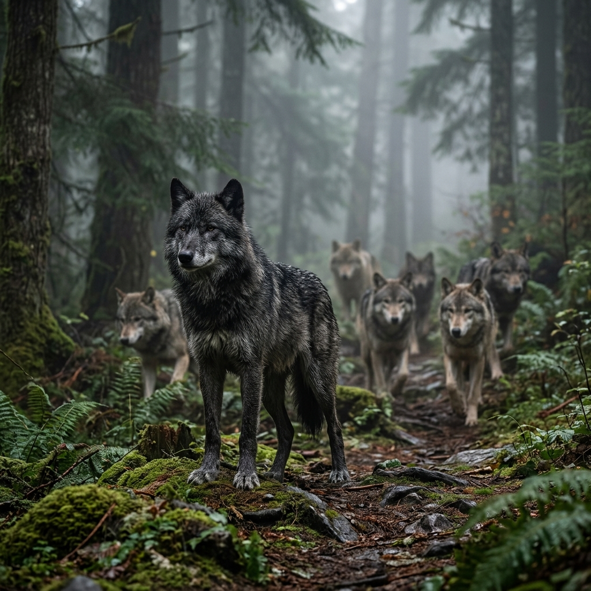

El Espíritu del Bosque
El lobo (Canis lupus) es uno de los depredadores más fascinantes del mundo. Desde que nace como un cachorro ciego e indefenso en una madriguera, hasta que se convierte en un cazador experto o un líder alfa, su vida es una constante prueba de supervivencia, lealtad y resistencia. Un lobo no solo vive para sí mismo, sino para su manada, demostrando una estructura social compleja y vínculos emocionales profundos.
Datos Curiosos
Comunicación Compleja
Sus aullidos no son solo para comunicarse a larga distancia, también sirven para reunir a la manada antes y después de cazar, o como advertencia para manadas rivales.
Visión Nocturna
Poseen una capa especial detrás de la retina llamada tapetum lucidum que les permite ver excepcionalmente bien en la oscuridad.
Resistencia Extrema
Pueden trotar a una velocidad constante durante horas y alcanzar velocidades de hasta 60 km/h durante una persecución corta.
Ciclo de Vida
Nacen sordos y ciegos. Empiezan a cazar con la manada a los pocos meses y pueden vivir entre 6 y 8 años en estado salvaje, aunque algunos superan los 10 años.
Los Riesgos de Cada Día
La vida salvaje no perdona. Desde enfermedades y escasez de presas durante los duros inviernos, hasta lesiones graves al intentar derribar grandes presas como alces o bisontes. Además, enfrentan la constante amenaza de manadas rivales por disputas de territorio y, trágicamente, el peligro que representa la expansión humana y la caza furtiva.
Cómo se Une a su Manada
La manada es, en esencia, una familia. Un lobo nace dentro de ella y aprende los complejos códigos sociales y de caza desde cachorro. Cuando llegan a la adultez (entre 1 y 2 años), algunos jóvenes deciden abandonar su grupo natal (dispersión) para buscar su propio territorio y pareja, fundando así una nueva manada. Otros permanecen, ayudando a criar a las nuevas generaciones de cachorros.
¿En qué partes los podemos encontrar?
Históricamente, el lobo gris habitaba casi todo el hemisferio norte. Hoy en día, sus principales poblaciones se encuentran en las vastas regiones de Canadá, Alaska, el norte de Estados Unidos, Europa del Este, Rusia y algunas zonas montañosas de Asia. Se adaptan a diversos ecosistemas: desde la tundra ártica hasta bosques templados, montañas y desiertos.